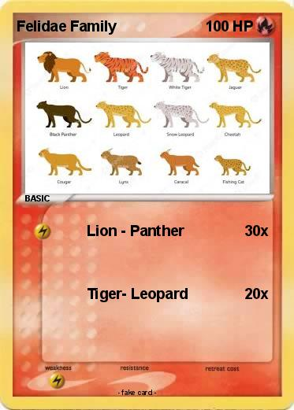

Feline, (family Felidae), consists of 37 cat species that includes: cheetah, puma, jaguar, leopard, lion, lynx, tiger, and domestic cat. Cats are native to almost every region on Earth, with the exception of Australia and Antarctica. They are carnivorous mammals that live in wildlife.
 The lion is one of the largest cats in the world
with males being taller and heavier than females and displaying a mane of long hair around their faces (in fact, it is the only case in the feline world where males and females actually look different).
This is tought to be connected with
testosterone levels, the mane of the male lion ranges from blonde, to red, brown and black in color and covers their head, neck and chest.-” AZ animals”
The Panther is an elusive and powerful animal
that has adapted well to a variety of habitats around the world, and is known to be one of the strongest climbers of all felines.
The Panther (also commonly known as the Black Panther) is a large member of the 'Big Cat' family.Is native to Asia, Africa and the Americas.
The Panther is not a distinct species itself However,the general name is used to refer to any black coloured feline of the Big Cat family, most notably Leopards and Jaguars.-”AZ animals”
Tigers are animals that live in both warm and cold areas of Asia. They are carnivores that hunt for prey at night. These big cats are solitary and have their own territory, and are one of the world’s apex predators. A Siberian tiger can weigh up to 660 pounds. Males are bigger than females. -” AZ animals”
The Leopard is a medium-sized wildcat that is natively found in a variety of different habitats across sub-Saharan Africa and southern Asia. A member of the “Big Cat” family, the Leopard is an agile and opportunistic hunter that has been able to exploit habitats unused by other large felines as it spends a great deal of its time high in the tree branches.
There are seven different sub-species of Leopard which differ in their appearance and geographic location, with the African Leopard being the most common and widespread and the others being the rare Amur Leopard.-
"AZ animals”